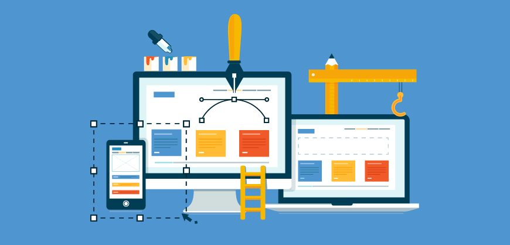

O que é a nossa plataforma:
É um software simples e acessível desenvolvido para qualquer pessoa criar plantas baixas, mesmo sem experiência em engenharia ou arquitetura. Com um design intuitivo e de baixo custo, ajudamos você a transformar suas ideias em projetos reais de forma rápida e descomplicada.
Nossos planos
Oferecemos opções flexíveis e acessíveis para todos os bolsos. Com a assinatura mensal, você garante acesso completo à ferramenta de criação, catálogo de itens precificados com lojas parceiras, tutoriais em vídeo e ao feed de plantas da comunidade.
Como funciona:

É muito fácil: assista aos tutoriais práticos na própria plataforma, monte seu projeto arrastando itens da lista lateral e veja o valor estimado dos materiais em lojas próximas. Você ainda pode publicar suas plantas no feed para compartilhar ou até rentabilizar!